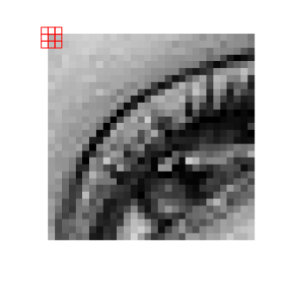

Image denoising¶
due: Sunday, Nov 6 at 11.59 PM
Image noise¶
Image noise is a random distortion in the brightness or color in an image. Noise appears to some extent in every image and can be created by imperfections in cameras, random light fluctuations, errors occurring during image recording, storage and transmission etc. There are several different types of image noise. In this project we will be working with the salt and pepper noise which occurs when the color of some random pixels in the image is replaced by white, and the color of some other random pixels is replaced by black.

Image with salt and pepper noise.¶
The main objective of this project is to experiment with tools that can be used to reduce appearance of salt and pepper noise in an image. These tools are the mean filter and the median filter.
Note. In this project we will work with black and white images. Color of each pixel will be described by a single number between 0 (black) and 1 (white).
Mean filter¶
The mean filter starts with an image P and produces from it a new, filtered image F with modified pixel colors. More precisely each pixels in position [i,j] in the filtered image is computed as the average of the pixels in a n \(\times\) n square of the original image P (with the [i,j] position at its center)
Example 1. The left side of the picture below shows a fragment of a photo with a 3 \(\times\) 3 square of pixels selected. The right side shows enlargement of the selected square with color value of each pixel. \(P[i, j]\) is the pixel at the center of the square.
{kind=link}
The value of \(F[i,j]\), the pixel of the filtered image, is given by the mean of the array
We can use numpy to compute this mean:
square = np.array([[0.6, 0.7, 0.4],
[0.7, 0.6, 0.1],
[0.5, 0.5, 0.0]])
sq_mean = np.mean(square)
print(sq_mean)
0.455555555556
Thus \(F[i,j]\) = 0.455555555556.
Median filter¶
The median filter is similar to the mean filter, but instead of using the mean of values of pixels in a square it takes the median of these values.
Example 2. We use the same square of pixels as in Example 1. The value of \(F[i, j]\) is the median of values of the pixels in this square. Using numpy we obtain:
square = np.array([[0.6, 0.7, 0.4],
[0.7, 0.6, 0.1],
[0.5, 0.5, 0.0]])
sq_median = np.median(square)
print(sq_median)
0.5
Therefore \(F[i, j]\) = 0.5.
Note. The mean filter and the median filter can be modified by using larger squares (5 \(\times\) 5, 7 \(\times\) 7 etc.) to compute mean and median. In each case the length of sides of the square must be an odd number, so that there is a pixel in the center of the square.
Edge pixels¶
While implementing mean and median filters we need to deal with the issue of pixels that are close to image edges, since for such pixels the square used to calculate mean or median may go outside the image:
{kind=link}
One way to deal with this problem is to enlarge the image adding a border on each side of some fixed color (say, white). The width of the border will depend on the size of the squares used by the filter: for 3 \(\times\) 3 squares it will suffice to add a border 1 pixel wide, for 5 \(\times\) 5 squares the width should be 2 pixels and so on. In this way a square centered at any pixel of the original image will fit inside the enlarged image, and we will be able to compute its mean or median.
{kind=link}
Project¶
Part 1. Write a function sp_noise(img, noise) that adds salt
and pepper noise to an image. Its first argument img should be
a 2-dimensional numpy array representing the image and the second argument
noise should be the fraction of pixels that are to be replaced by noise
(for example, with noise = 0.05 about 5% of pixels should be noise,
consisting in roughly equal parts of white and black pixels). The function
should return a 2-dimensional numpy array representing the original image
with noise added.
Part 2. Write a function mean_filter(img, s) that takes as its
first argument a 2-dimensional numpy array img representing an image,
and returns a numpy array obtained by applying to img the mean filter.
The second argument of the function, s is the size of square of pixels
used by the filter (i.e. if s = 3 then the filter will use
3 \(\times\) 3 squares etc.).
Part 3. Write a function median_filter(img, s) that takes as its
argument a numpy img array representing an image, and returns a
numpy array obtained by applying to img the median filter. Again,
the second argument s is the size of squares used by the filter.
Part 4. Investigate how suitable these filters are for reducing salt and pepper noise in images and describe your observations. Here are some questions you may consider:
Which filter, mean or median works better for reducing noise and why?
What happens as the value of
sin these filters is increased?What happens as the level of noise in an image is increased?
You can also include ideas how the process of noise reduction could be improved.
Part 5. The general scheme behind the mean and median filters is to take a small square centered at a pixel, and use some formula involving values of pixels in the square to compute a single number. This number is then taken as the new value of the pixel at the center of the square. Design new image filters by choosing formulas, other then mean and median, for these computation. Apply these filters to some photographs and describe what effects they produce.
Note. Below are links to black and white photos that you can use in
your work. You can add salt and pepper noise to these images using the
function sp_noise() defined in Part 1 of the project.
face.png(resolution: 400 \(\times\) 266)boston.png(resolution: 1000 \(\times\) 666)circuit.png(resolution: 640 \(\times\) 426)motorbike.png(resolution: 640 \(\times\) 552)hamburg.png(resolution: 900 \(\times\) 600)sign.png(resolution: 1000 \(\times\) 984)
{kind=link}
{kind=link}
{kind=link}
{kind=link}
{kind=link}
{kind=link}
Extra credit¶
Below are links to three photos taken at various places on campus, which were obscured by salt and pepper noise. For extra credit (grade increase to the next higher grade for this report: A- to A etc.) reduce noise in these images, find locations where the photos were taken, take photos showing you at the same locations, and include these photos in your report.
{kind=link}
{kind=link}
{kind=link}
Note 1. To qualify for the extra credit your report must include both code producing images with noise removed to the extent that they are recognizable, and your own photos. (At for least 2 photos)
Note 2. In order to include your photos in the report do the following:
while the cursor is in a markdown cell, press edit from the top menu
select Insert Image
choose the image path and select your picture
When you execute this cell the photo should be displayed.
Once you embed all photos in this way you can submit the notebook file.
Please DO NOT drag and drop your pictures in the notebook, as it will display the picture only on your own laptop